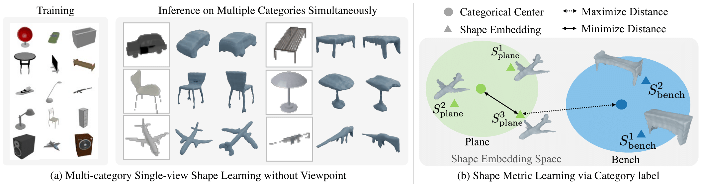

We present a novel 3D shape reconstruction method which learns to predict an implicit 3D shape representation from a single RGB image. Our approach uses a set of single-view images of multiple object categories without viewpoint annotation, forcing the model to learn across multiple object categories without 3D supervision. To facilitate learning with such minimal supervision, we use category labels to guide shape learning with a novel categorical metric learning approach. We also utilize adversarial and viewpoint regularization techniques to further disentangle the effects of viewpoint and shape. We obtain the first results for large-scale (more than 50 categories) single-viewpoint shape prediction using a single model without any 3D cues. We are also the first to examine and quantify the benefit of class information in single-view supervised 3D shape reconstruction. Our method achieves superior performance over state-of-the-art methods on ShapeNet-13, ShapeNet-55 and Pascal3D+.
Multi-category Shape without 3D Supervision
We present the first method to learn 3D shape reconstruction from single-viewpoint images over multiple object categories simultaneously, without 3D supervision or viewpoint annotations. To facilitate shape learning under such a challenging scenario, We leverage category labels to perform metric learning in the shape embedding space. For each category, we learn a shape center. Then with a given sample, we minimize the distance between its shape embedding and the corresponding category center, while contrasting this distance with other inter-category distances.

Citation
@article{huang2022planes,
title={Planes vs. Chairs: Category-guided 3D shape learning without any 3D cues},
author={Huang, Zixuan and Stojanov, Stefan and Thai, Anh and Jampani, Varun and Rehg, James M},
journal={arXiv preprint arXiv:2204.10235},
year={2022}
}